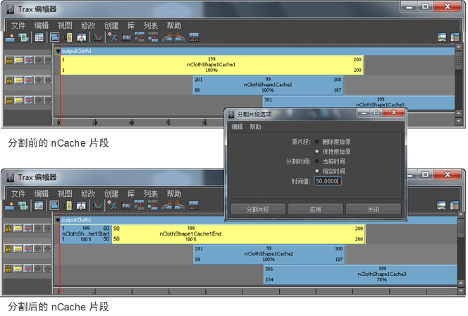

可以对 nCache 片段进行分割，将对象的缓存模拟拆分为多个可重用的缓存片段。
注：
循环 nCache 片段无法分割。循环缓存片段需要先合并，然后才能分割。请参见合并 nCache。
分割 nCache 片段
- 在场景视图中，选择要分割其缓存片段的对象。
- 在“Trax 编辑器”(Trax Editor)中，选择“列表 > 加载选定角色”(List > Load Selected Characters)。
所有当前对象的缓存都将在轨迹视图中显示为片段。
- 选择要分割的缓存片段。
- 执行下列操作之一：
- 将 Trax 当前时间指示器拖动到缓存片段上要分割的位置，在缓存片段上单击鼠标右键 (
 )，然后从显示的上下文菜单中选择“分割片段”(Split Clip)。
)，然后从显示的上下文菜单中选择“分割片段”(Split Clip)。
nCache 片段将在当前时间指示器的当前帧进行分割，两个缓存片段将替换选定缓存片段显示。
- 在 Trax 菜单栏中，选择“编辑 > 分割”(Edit > Split)。 
nCache 片段根据“分割片段选项”(Split Clip Options)窗口中的当前设置进行分割，两个片段将替换选定缓存片段显示。请参见 Trax 编辑器“编辑”(Edit)菜单中的“分割”(Split)。
提示：重命名“分割”(Split)缓存片段操作生成的 nCache 片段可以帮助记忆其原始顺序。
- 将 Trax 当前时间指示器拖动到缓存片段上要分割的位置，在缓存片段上单击鼠标右键 (